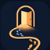
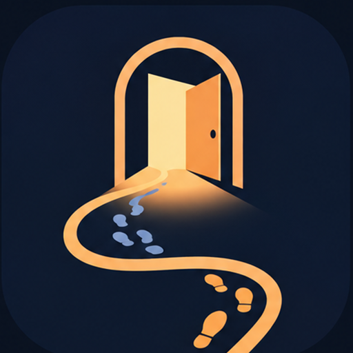

오늘의 말씀
『탕부 하나님』(팀 켈러)을 읽고 쓴 묵상

홈라인 꿈 목표나
아버지
누가복음 15:22, 아버지가 종들에게
“제일 좋은 옷을 내어다가 입히고 손에 가락지를 끼우고 발에 신을 신기라.” 하나씩 눌러 받아 보세요.
내일은 다시, 한 걸음부터.

홈라인 · 집으로 가는 60일
사랑을 얻으려는 공부가 아니라, 이미 받은 사랑에 응답하는 공부.
지금 휴대폰으로 열고
오늘의 나를 골라 보세요
증명하려는 공부가 아니라, 사랑받는 사람의 성실
누가복음 15장, 아버지에게 두 아들이 있었다. 집을 떠난 작은아들도, 집 안에 살았지만 끝내 잔치에 들어가지 못한 큰아들도 길을 잃었다. 아버지는 둘 다에게 먼저 나아가셨다.
믿음이 성적을 올려 주는 게 아니라, 성적을 대하는 마음을 바꿔 준다.
세 곳을 눌러 말씀을 보거나, 아래 '하루를 마치며'에서 오늘의 나를 골라보자.
등불 하나가 하루치 말씀이에요. 누르면 그날 말씀이 열려요. 오늘의 등불은 '하루 마치기'를 하면 켜져요.
『탕부 하나님』(팀 켈러)을 읽고 쓴 묵상
오늘 나는 어떤 아들이었나?
어느 쪽이었든, 아버지는 먼저 나를 찾아오신다.
정답을 고르는 게 아니에요. 대부분의 날은 두 아들이 섞여 있어요. 오늘에 가장 가까운 것을 골라 보세요.
오늘의 나를 고르면, 그 자리에서 집으로 돌아가는 길을 직접 걸어요.
기록은 이 기기에만 저장된다. 폰·PC·태블릿·웹은 서로 모르는 사이라 자동으로 합쳐지지 않는다. 아래에서 코드를 뽑아 다른 기기의 같은 칸에 붙여넣으면 그대로 옮겨진다. 가끔 뽑아서 어딘가에 저장해두면 그게 백업이다.